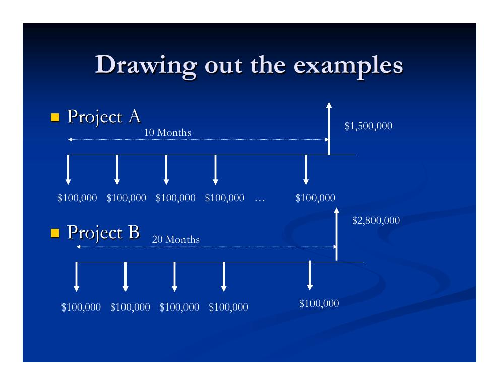
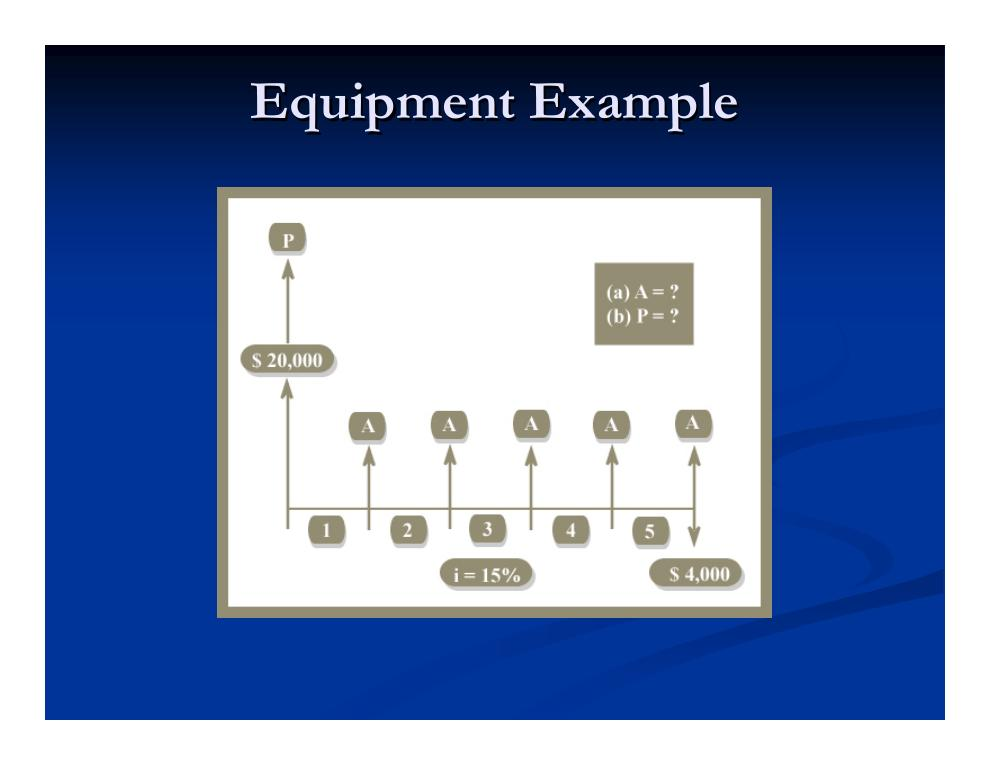
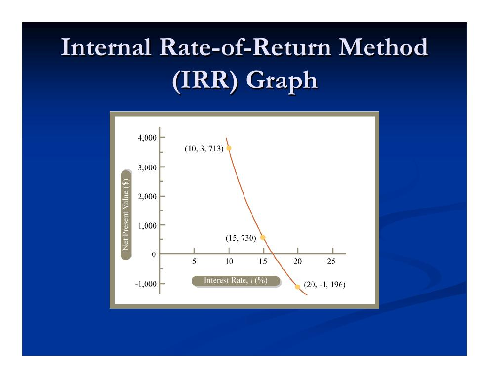

- Zinseszins und Zeitwert des Geldes
- Zahlungen verschieben: die vier Grundumrechnungen
- Kapitalwert (NPV) an zwei Minimalbeispielen
- Entscheidungsregeln, Diskontsatz und MARR
- Zinsformeln: Von der Einmalzahlung zur Annuität
- Der interne Zinsfuß (IRR)
- Weitere Bewertungsverfahren
- Was die Verfahren stillschweigend voraussetzen
Zinseszins und Zeitwert des Geldes
Ausgangspunkt aller Bewertungsinstrumente ist der Zinseszins (Compounding). Legen wir einen Betrag x bei einer Bank mit Zinssatz i an und werden die Zinsen jährlich gutgeschrieben, wächst das Guthaben exponentiell:
Daraus folgt der schon in Kapitel 1.2 eingeführte Zeitwert des Geldes: Wenn Geld jederzeit verlässlich angelegt werden kann und wir als rationale Akteure keine Investition eingehen, die weniger abwirft als die Bank, dann ist Geld heute „gleich viel wert" wie ein größerer Betrag in der Zukunft – und ein künftiger Betrag gleich viel wert wie sein kleinerer Barwert heute. Bei einer verlässlichen Anlagequelle sind wir zwischen allen Zahlungsströmen mit demselben Barwert indifferent, weil sich einer ohne Zusatzkosten in den anderen umwandeln lässt.
Zahlungen verschieben: die vier Grundumrechnungen
In Zahlungsstrom-Diagrammen werden Kosten als Pfeile nach unten und Einnahmen als Pfeile nach oben auf einer Zeitachse notiert; eine einfache Investition besteht aus einer anfänglichen Auszahlung und späteren Einzahlungen. Mit der verlässlichen Anlagequelle (Zinssatz i) lässt sich jede Zahlung kostenneutral entlang der Zeitachse verschieben – in vier Grundfällen:
| Umrechnung | Vorgehen (über die verlässliche Quelle) | Ergebnis |
|---|---|---|
| Künftige Einnahme r (Jahr t) → heute | Heute den kleineren Betrag leihen; die künftige Einnahme tilgt den Kredit samt Zinsen. | r / (1 + i)t |
| Künftige Kosten c (Jahr t) → heute | Heute den kleineren Betrag anlegen; die Anlage wächst bis t genau auf c an. | c / (1 + i)t |
| Heutige Einnahme r → Jahr t | Alles sofort anlegen und im Jahr t abheben. | r × (1 + i)t |
| Heutige Kosten c → Jahr t | Den Betrag heute leihen und im Jahr t samt Zinsen zurückzahlen. | c × (1 + i)t |
Der Kapitalwert (Net Present Value, NPV) eines Zahlungsstroms ist die Summe der Barwerte aller Kosten und Einnahmen – Einnahmen positiv, Kosten negativ gezählt. Er ist stets relativ zu einem Diskontsatz definiert (hier: dem Zinssatz der verlässlichen Quelle) und gibt den Wert des Zahlungsstroms über das hinaus an, was die verlässliche Quelle – die Opportunitätskosten – aus denselben Einsätzen gemacht hätte. Rechentechnisch werden die Glieder des Zahlungsstroms nacheinander mit dem Faktor 1 / (1 + r)t abgezinst (Discounted-Cash-Flow-Methode), denn der Wert von Anlagen und Krediten wächst exponentiell.
Kapitalwert (NPV) an zwei Minimalbeispielen
Zwei bewusst einfache Beispiele zeigen, was der NPV aussagt. Die verlässliche Quelle biete jeweils 10 % Jahreszins.
Beispiel 1: Hochverzinsliche Anlage
Wir investieren im Jahr 0 100 $ in ein risikoreiches Vorhaben und erhalten im Jahr 1 121 $ zurück.
Bedeutung: Die Investition ist um 10 $ (in heutigem Geld) besser, als die 100 $ zur Bank zu tragen – diesen Betrag könnte man sich sofort „auszahlen", wenn man die Investition über die Bank finanziert.
Beispiel 2: Geld in der Matratze
Wir stecken im Jahr 0 100 $ in die Matratze und holen sie im Jahr 1 unversehrt wieder heraus.
Bedeutung: Obwohl nominal kein Cent verloren geht, vernichtet die Matratze rund 9 $ an heutigem Wert – nämlich die entgangenen Bankzinsen. Der NPV misst immer den Gewinn relativ zur besten Alternative, nie den nominalen Überschuss.
Entscheidungsregeln, Diskontsatz und MARR
„Entwickeln oder nicht entwickeln?" – die Bewertungsinstrumente beantworten drei Fragen: Lohnt sich ein einzelnes Projekt überhaupt? Welches aus einer Liste machbarer Projekte ist das beste? Und wie ist die Rangfolge aller Projekte untereinander? Die Leitlinie der Folien: „Ziel ist, die höchste Nettorendite auf das eingesetzte Kapital zu erzielen, die mit den eingegangenen Risiken vereinbar ist."
Mit dem NPV lässt sich beides tun: ein Projekt gegen seine Opportunitätskosten prüfen (diese bestimmen den Diskontsatz r) – oder das beste aus mehreren sich gegenseitig ausschließenden Projekten wählen (NPV maximieren).
Zwei Zinsgrößen sind dabei auseinanderzuhalten:
- Diskontsatz (Discount Rate)
- Abzinsungssatz der Bewertung: Zeitwert des Geldes plus Risikozuschlag. Seine Wahl ist eine eigene Entscheidung und beeinflusst das Ergebnis maßgeblich.
- MARR (Minimum Attractive Rate of Return)
- Mindestverzinsung: der niedrigste Diskontsatz, den der Markt entsprechend den Risiken eines Projekts akzeptiert – die Latte, die ein Projekt mindestens überspringen muss.
Beispiel: Zwei Lagerhallen im Vergleich
| Lagerhalle A | Lagerhalle B | |
|---|---|---|
| Bauzeit | 10 Monate | 20 Monate |
| Kosten | 100.000 $/Monat | 100.000 $/Monat |
| Verkaufserlös | 1.500.000 $ | 2.800.000 $ |
| Gesamtkosten (nominal) | 1.000.000 $ | 2.000.000 $ |
| Gewinn (nominal) | 500.000 $ | 800.000 $ |
Nominal scheint B klar vorn (800.000 $ gegenüber 500.000 $ Gewinn). Aber B bindet doppelt so lange Kapital, und alle Zahlungen liegen zeitlich anders. Erst wenn man beide Zahlungsströme aufzeichnet und mit demselben Diskontsatz abzinst, werden die Projekte vergleichbar – genau dafür sind die folgenden Zinsformeln da. Das Beispiel stammt von Peña-Mora (2003).

Zinsformeln: Von der Einmalzahlung zur Annuität
Für wiederkehrende Rechnungen haben sich Standardfaktoren etabliert, notiert als (Ziel/Quelle, i %, n). Die Symbole: i = effektiver Zinssatz pro Zinsperiode (Diskontsatz bzw. MARR), t bzw. n = Zahl der Zinsperioden, PV = Barwert, NPV = Kapitalwert, FV = Endwert (Future Value), A = Annuität (gleichbleibende jährliche Zahlung).
| Faktor (engl. Bezeichnung) | Notation | Formel | Beantwortet die Frage |
|---|---|---|---|
| Aufzinsungsfaktor (Single Payment Compound Amount) | (F/P, i%, n) | (1 + i)n | Was wird aus einer Einmalzahlung nach n Jahren? |
| Abzinsungsfaktor (Single Payment Present Worth) | (P/F, i%, n) | 1 / (1 + i)n | Was ist eine künftige Einmalzahlung heute wert? |
| Rentenendwertfaktor (Uniform Series Compound Amount) | (F/A, i%, n) | [(1 + i)n − 1] / i | Was ergeben n gleiche Jahreszahlungen am Ende? |
| Tilgungsfaktor (Uniform Series Sinking Fund) | (A/F, i%, n) | i / [(1 + i)n − 1] | Welche Jahresrate spart ein Endwert-Ziel an? |
| Rentenbarwertfaktor (Uniform Series Present Worth) | (P/A, i%, n) | [(1 + i)n − 1] / [i (1 + i)n] | Was sind n gleiche Jahreszahlungen heute wert? |
| Annuitätenfaktor (Uniform Series Capital Recovery) | (A/P, i%, n) | [i (1 + i)n] / [(1 + i)n − 1] | Welche Jahresrate entspricht einem heutigen Betrag? |
Die Faktoren sind paarweise Kehrwerte voneinander: (P/F) = 1/(F/P), (A/F) = 1/(F/A), (A/P) = 1/(P/A). (Quelle: Peña-Mora 2003.)
Anmerkung zur stetigen Verzinsung
Bisher wurde jährlich verzinst. Wird der Jahreszins i auf n Zinsperioden pro Jahr verteilt, beträgt der Effektivzins für das ganze Jahr (1 + i/n)n. Lässt man n gegen unendlich gehen, erreicht man die stetige Verzinsung:
Beispiel: Baugerät (Annuität und Barwert)
Ein Gerät kostet 20.000 $, hält voraussichtlich 5 Jahre und hat dann einen Restwert (Salvage Value) von 4.000 $; die Mindestverzinsung beträgt 15 %. Gesucht sind (a) das jährliche Äquivalent A und (b) das Gegenwarts-Äquivalent P dieser Investition (Beispiel nach Peña-Mora 2003):

P = −20.000 + 4.000 × (P/F, 15%, 5) ≈ −20.000 + 4.000 × 0,4972 ≈ −18.011 $
Lesart: Das Gerät zu besitzen kostet – Restwert eingerechnet – umgerechnet rund 5.373 $ pro Jahr bzw. einmalig rund 18.011 $ in heutigem Geld. Solche Äquivalente machen Anschaffungen mit unterschiedlichen Laufzeiten und Restwerten vergleichbar.
Der interne Zinsfuß (IRR)
Der interne Zinsfuß (Internal Rate of Return, IRR) gibt die Verzinsung an, die eine Investition selbst erwirtschaftet – anschaulich die Rate einer geometrisch wachsenden Wertreihe. Berechnet wird er üblicherweise als der Diskontsatz, der den NPV auf null setzt. Die Entscheidungsregel lautet:
„Akzeptiere ein Projekt, dessen IRR über dem Diskontsatz liegt" – oder alternativ: „Maximiere den IRR über sich gegenseitig ausschließende Projekte." (Peña-Mora 2003)
IRR-Beispiel
Für das Gerätebeispiel mit jährlichen Einnahmen von 5.600 $ sucht man die Rate r, die den Kapitalwert auf null bringt:
Da 16,9 % über der Mindestverzinsung von 15 % liegt, ist das Projekt gerechtfertigt. Grafisch findet man den IRR als Nulldurchgang der NPV-Kurve über dem Zinssatz:

IRR oder NPV?
- Meist führen IRR und NPV zur selben Entscheidung bzw. Rangfolge.
- Der IRR kommt ohne Annahme (oder Berechnung) eines Diskontsatzes aus.
- Aber: Der IRR betrachtet nur die Rate des Gewinns, nicht seine Größe; er ignoriert die Möglichkeit der Wiederanlage; und er ist nicht immer eindeutig – wechseln sich Ein- und Auszahlungen im Lebenszyklus mehrfach ab, kann die NPV-Kurve mehrere Nullstellen haben.
Weitere Bewertungsverfahren
- Nutzen-Kosten-Verhältnis (Benefit-Cost Ratio, Nutzen/Kosten – oder sein Kehrwert): Auch hier wird in der Regel diskontiert; akzeptiert wird, wenn der Nutzen die Kosten übersteigt (Verhältnis > 1 bzw. Kehrwert < 1). Bei öffentlichen Projekten verbreitet. Schwächen: Die absolute Größe des Nutzens bleibt außen vor, und oft ist schwer zu entscheiden, ob etwas als „Nutzen" oder als „negative Kosten" zählt – die Einordnung verändert das Verhältnis.
- Kostenwirksamkeitsanalyse (Cost-Effectiveness): bezieht nicht-ökonomische Größen ein, häufig ebenfalls mit Diskontierung – etwa $ pro gerettetem Leben oder $ pro qualitätskorrigiertem Lebensjahr (QALY).
- Amortisationsdauer (Payback Period, „Time to Return"): die Mindestzeit, bis die Erträge die Kosten zurückgezahlt haben. Nur als Zweitkriterium brauchbar, denn sie ignoriert alles nach dem Amortisationszeitpunkt und berücksichtigt keine Diskontierung. Die diskontierte Variante heißt Capital Recovery Period.
- Modifizierter interner Zinsfuß (Adjusted Internal Rate of Return, AIRR): behebt einen Teil der IRR-Schwächen.
Was die Verfahren stillschweigend voraussetzen
Alle bisher vorgestellten Instrumente beruhen auf drei stillen Annahmen: dass nur bezifferbare Geldgrößen zählen, dass die künftigen Zahlungsströme sicher bekannt sind und dass beim Diskontieren Leihen und Anlegen zum gleichen Zinssatz möglich ist.
Doch Geld ist nicht alles. Regelmäßig fallen unter den Tisch:
- Gesellschaftlicher Nutzen – Krankenhaus, Schule, Beschäftigungswirkung,
- immaterieller Nutzen – etwa eine neue Cafeteria,
- strategischer Nutzen – etwa die Partnerschaft mit einer Firma für eine langfristige Geschäftsbeziehung.
Und es fehlen entscheidende Unsicherheiten – auf der Einnahmenseite wie auf der Kostenseite:
| Unsichere Einnahmen | Unsichere Kosten |
|---|---|
| Auslastungs- bzw. Belegungsgrad | Baukosten: Baugrund- und Umweltbedingungen, Lohnkosten, Höhe des niedrigsten Gebots, variable Zinssätze |
| Preiselastizität und Kostenniveau | Instandhaltungskosten: Energiekosten, Verschleißgeschwindigkeit, Lohnkosten |
| Projektdauer | |
| Einnahmen nach der Bauphase, z. B. Verkaufserlös des Gebäudes |